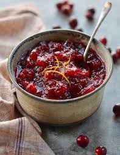

Fresh Cranberry Sauce

Fresh Cranberry Sauce
Description
This is a damn necessity for your Thanksgiving this year. Has the best trait of any Thanksgiving dish - ease to make. This bad boy only needs three ingredients to keep you focused on not overcooking your Turkey while making your relatives think you went to culinary school.
Ingredients
- 1 cup of Water
- 1 cup of Sugar
- 1 package of Fresh Cranberries
Instructions
- Bring water to boil in saucepan; add sugar and cook until sugar is dissolved (about 5 minutes>
- Stir cranberries into the saucepan and bring to a boil. Reduce heat to low, and simmer until cranberries have popped and sauce is chunky, about 10 minutes or longer for desired consistency. The longer you cook it, the less chunky it will be.
- Pour sauce into a serving dish or jars and cover until ready to use; the pectin in the cranberries will make the cranberry sauce gel as it cools.
- Mix cranberry sauce with a fork before serving